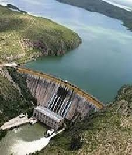

La Presa La Boquilla también conocida como Lago Toronto, es la presa más grande de Chihuahua. Fue construida de 1910 a 1916 sobre el Río Conchos y llegó a ser la más grande de América Latina.
Hoy es el centro turístico más importante de la región. Puedes dar paseos en lancha, pescar lobina y comer mariscos a la orilla del lago.